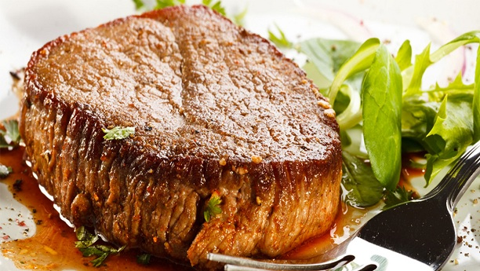

Hunter Beef

Hunter beef Recipe in English is an easy and traditional cooking recipe to prepare at home. It provides you an awesome taste of Beef & Mutton Recipes.
Ingredients
- 2 kg Beef "Roast cut" Bread shape one piece.
- 2 tsp. Crystallized Salt petre "Kulmi shora"
- 3 tsp. Black pepper
- 2" stick of Cinnamon
- 2 tsp. brown Sugar
- 4 Black Cardamom
- 3 tbs. Lemon juice
Instructions
- Wash the meat thoroughly and dry with kitchen towel.
- Ground all the spices.
- Add all spices in the lemon juice to make paste.
- Rub the paste thoroughly on the meat.
- Place it in a glass or stainless steel container and cover it.
- Place the bowl in the fridge for one day.
- Next day get the meat out of fridge and sort of massage the meat to absorb the paste, it is important that at least half an hour is spent in rubbing the meat.
- Once again put the meat loaf back in the fridge.
- Repeat the same process each day for six days.
- On Sixth day remove the meat loaf from the fridge and tie it with a strong string.
- Place the meat in a large pot and put 2 cups water in the pot NOT on the meat loaf.
- Cook it over low heat for 2 to 3 hours or until the water is absorbed.
- Hunter Beef is a very popular snack from Pakistan. We have it in the cold winter evenings with Kashmir tea or coffee. Some people like to fry stripes of hunter beef and then serve with tea or coffee. Left over can be kept in the fridge for few days and can also be stored in freezer for longer period of storage.